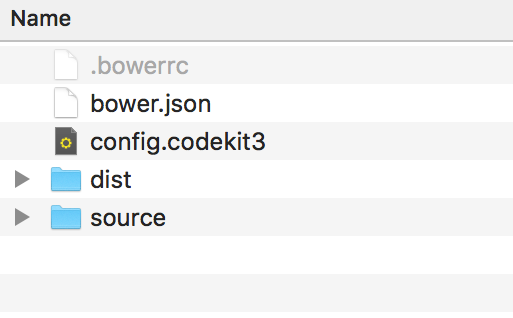
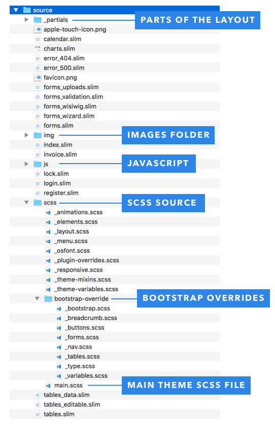
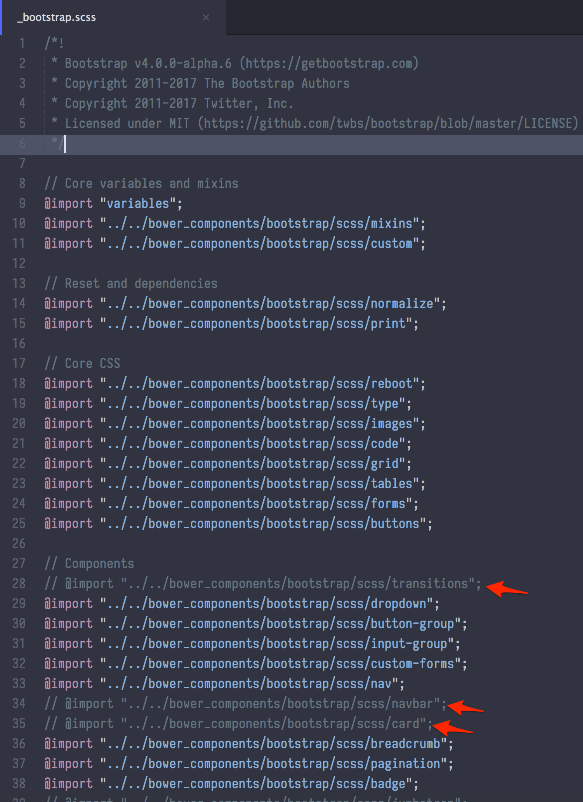
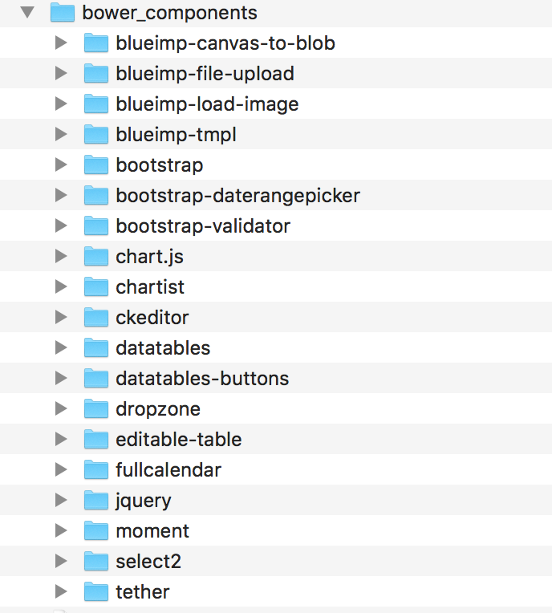

Thank you for the purchase of our premium HTML template Light Admin. We will walk you through the installation and setup of this template. Hold tight, it will be quick and easy.

Your download will include two folders: dist and source. The dist folder includes the generated html and asset files that you should not edit ideally. These files are meant for production environment.
To edit the template you would need to edit files inside the source folder.
Inside the source folder you will find a set of files and folders. Most of the files have a .slim extension. These are the files that generate html files in the dist folder. Don't get surprised with a .slim file extension. It is a very powerful and popular template engine language called Slim Lang, you can read more about it by clicking here.
We used CodeKit app to compile .slim and .scss files, but you can use any scss compiler that you like. All the scss source files are located in the source > scss folder.

There is a main file called main.scss which includes other .scss files to generate a dist/css/main.css file. You can see which scss files are part of the main file and edit them accordingly.
Our template is using latest version of Bootstrap CSS framework.

There is a folder source/scss/bootstrap-override, it has different scss files that override default Bootstrap files. Most important file there is a _bootstrap.scss which is a custom version of the bootstrap.scss file that comes originally with bootstrap.
We are using a custom (pretty much duplicated) version so that we can comment out some parts of the bootstrap that we are not going to use. You can comment back those lines. As you can see on a screenshot above some lines are commented out.
Another important file is located in source/scss/bootstrap-override/ folder, called _variables.scss. It has all the variables from the original bootstrap file, this way we can always update bootstrap to the latest verison and keep our custom changes to bootstrap variables. If you need to change bootstrap variables - you have to change them in this file.
Our template has it's own variables as well. They are located in source/scss/_theme-variables.scss file.
Responsive Styles are located in source/scss/_responsive.scss file.
What is Bower? Web sites are made of lots of things — frameworks, libraries, assets, and utilities. Bower manages all these things for you.

We are using Bower to manage all the different frameworks and plugins that we use in our template. It is an incredible package manager which allows us to separate all the third party/vendor assets from our core template. It allows us to keep all the required libraries and frameworks up to date and not worry about outdated code.
You can find a bower_components folder in the files you downloaded. Do not make changes inside the libraries you find there, instead you have to override them by your own files. You can also find a bower.json file which holds all the settings that bower manager needs.
We used Codekit app to compile this template, but you can also use GULP to compile the project, we have included all the necessary files so you can just install the gulp and run the gulp command in the html_admin folder.
Yes we have included all the necessary gulp task files and you can just enter the template directory in console and run gulp command and it will generate the updated dist folder.
To see a full changelog click here